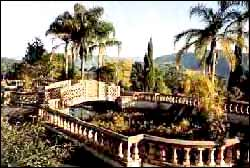
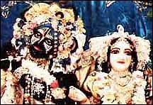
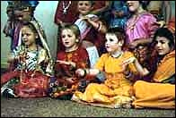
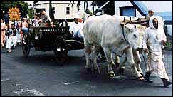

|
Type of centre: Temple
Contact details
Address: PO Box 687, Murwillumbah
NSW 2484
Australia
Ph: +61-(0)66-795375
E-mail: ajita@in.com.au
Brief
details of centre
The Temple was established in 1977 on a 1,000 acre property
in the lush farming districts of the Tweed River Valley. Lord Krishna
in His deity form was installed and is worshipped with great love
as the centre of activities of the devotees in the community. As
well as our presiding deities, Sri Sri Radha Govardhanadhari, we
have deities of Sri Sri Gaura Nitai, Sri Sri Krishna Balarama and
Sri Giriraja.
New Govardhana is located in the sub-tropical
Tweed Valley of Northern NSW. The environment features clean water,
unpolluted rivers and many areas of lush native rainforest. The
devotees here are gradually developing a self sufficient alternative
community based on spiritual values.
Deities: Sri Sri Radha Govardhanadhari,
Sri Sri Gaura Nitai, Sri Sri Krishna Balarama and Sri Giriraja.

Gurukula
The New Govardhana Gurukula is a unique educational institution,where
the students receive traditional academic training along with spiritual
instruction in the process of Bhakti Yoga, devotional service to
Sri Krishna. The school is located in a rural environment of stunning
beauty where the students and teachers begin their day with temple
worship and chanting of the Holy Name of Krishna. Primary theological
training is in the texts of Bhagavad-gita and Srimad-Bhagavatam,
two very ancient and famous Vedic scriptures.
Cow
Protection
In the Hare Krishna movement cows and bulls are revered and
protected. In the Vedic literature the cow is described as mother
and the bull as father. On New Govardhana the cows provide milk
and the bulls are trained to till the earth,pump water for irrigation
and to draw various types of wheeled vehicles. The two devotees
responsible for the cow protection program are Lagudi and Gopinatha
Acarya.
Guest facilities also available: For details phone +61-(0)66-725930
< Back · Top
^
|